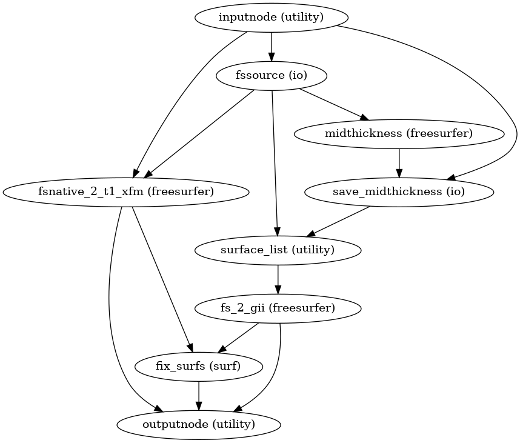

niworkflows.anat.freesurfer module¶
FreeSurfer-related workflows.
-
niworkflows.anat.freesurfer.init_gifti_surface_wf(name='gifti_surface_wf', subjects_dir='/tmp/subjects')[source]¶ Build a Nipype workflow to prepare GIFTI surfaces from FreeSurfer.
This workflow prepares GIFTI surfaces from a FreeSurfer subjects directory If midthickness (or graymid) surfaces do not exist, they are generated and saved to the subject directory as
lh/rh.midthickness. These, along with the gray/white matter boundary (lh/rh.smoothwm), pial sufaces (lh/rh.pial) and inflated surfaces (lh/rh.inflated) are converted to GIFTI files. Additionally, the vertex coordinates arerecenteredto align with native T1w space.- Workflow Graph
- 
(Source code, png, svg, pdf)
- Parameters
subjects_dir (str) – FreeSurfer’s
$SUBJECTS_DIRenvironment variable.name (str) – Name for the workflow hierarchy of Nipype
- Inputs
in_t1w (str) – original (pre-
recon-all), reference T1w image.subject_id (str) – FreeSurfer subject ID
- Outputs
surfaces (list) – GIFTI surfaces for gray/white matter boundary, pial surface, midthickness (or graymid) surface, and inflated surfaces.
surf_norm (list) – Normalized (re-centered) GIFTI surfaces aligned in native T1w space, corresponding to the
surfacesoutput.fsnative_to_t1w_xfm (str) – LTA formatted affine transform file.
{kind=link}
{kind=link}